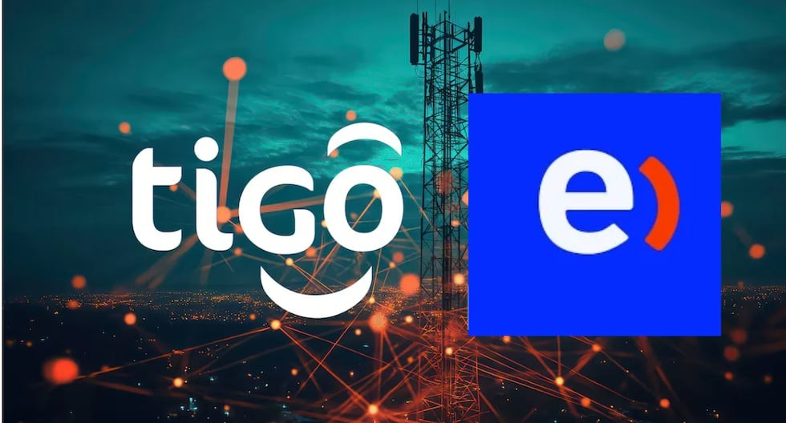
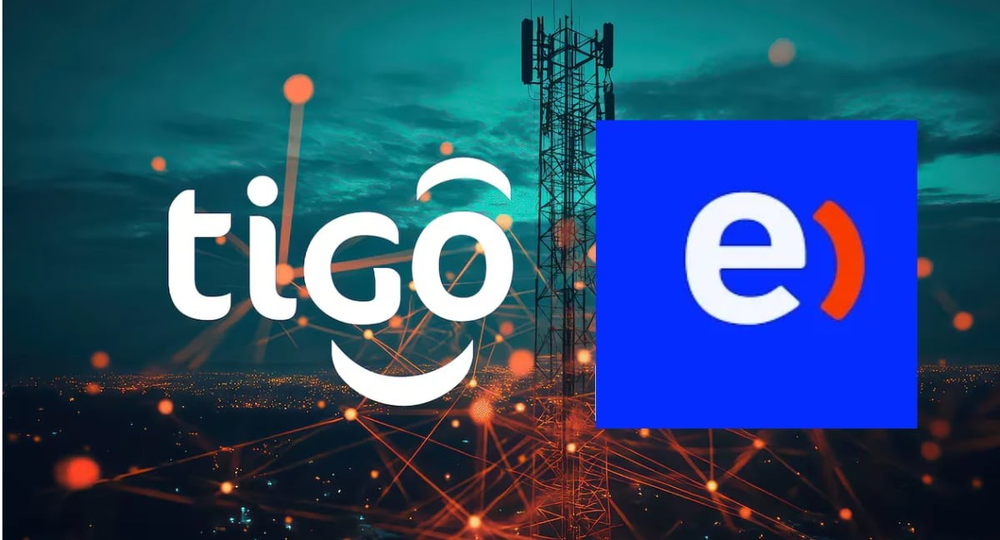
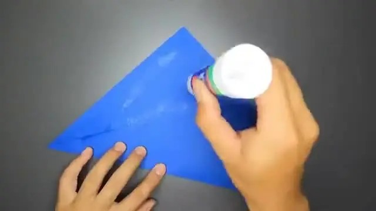

El CEO de Entel, Antonio Buchi, explico que la venta de la filial peruana a Millicom por US$1,714 millones responde a la dificultad de seguir creciendo en un mercado altamente competitivo.

Entel dejo el mercado peruano tras mas de 12 anos de operaciones, en una transaccion valorizada en US$1,714 millones.
La decision de Entel de vender el 100% de sus operaciones en Peru a la multinacional Millicom, duena de la marca Tigo, responde a una evaluacion estrategica sobre las oportunidades de crecimiento y generacion de valor en ese mercado. Asi lo explico el CEO de la compania chilena, Antonio Buchi, quien sostuvo que, pese al buen desempeno de su filial peruana, resultaba complejo seguir creando valor frente a la oportunidad economica que ofrecia la transaccion.
La venta, anunciada como una de las operaciones mas relevantes del sector telecomunicaciones en la region, marca el fin de mas de 12 anos de presencia de Entel en el Peru. La compania deja un mercado en el que logro posicionarse como el tercer operador, con mejoras sostenidas en sus indicadores financieros, pero con limitaciones estructurales para escalar frente a los lideres del sector.
Durante el Investor Day de la empresa, Buchi senalo que el mercado peruano presenta un entorno altamente competitivo y desafios respecto a su evolucion futura. Estos factores llevaron a la compania a evaluar sus proximos pasos despues de mas de una decada de operacion en el pais.
"¿Hay espacio para crear mas valor dentro de este mercado? Y la verdad es que, en nuestra opinion, y esa es la razon de la operacion (venta de la filial peruana), no es facil hoy en dia, dado donde ya estamos, seguir generando mas valor para nuestros accionistas versus esta oportunidad que se nos presento de una salida inorganica completa de Peru", manifesto el ejecutivo.

El mercado peruano de telecomunicaciones es altamente competitivo, con operadores de gran escala y fuerte presion en precios.
Buchi destaco que Entel Peru atraviesa un buen momento operativo y financiero. Actualmente, la compania ocupa el tercer lugar en el mercado y ha registrado un crecimiento sostenido en Ebitda. Segun detallo, la filial alcanzo un margen Ebitda de 27%, luego de que anteriormente la empresa proyectara llegar a niveles cercanos al 30%.
"Nos hubiera gustado estar mas cerca del primer operador, pero lo positivo es que, a pesar de no haber ocurrido eso, si hemos sostenidamente crecido en Ebitda. Por lo tanto, operacional, comercial y financieramente, la compania esta muy sana y en un muy buen momento", afirmo.
La reflexion del CEO deja en claro un punto importante: la venta no responde a un negocio en crisis, sino a una decision estrategica de aprovechar una ventana de valor. "Uno puede salir de un mercado cuando esta mal y, por lo tanto, lo unico que quiere es arrancar, o al reves, salir del mercado cuando uno cree que ya ha llegado a un muy buen momento y esta muy bien parado", sostuvo.
El acuerdo con Millicom contempla la venta del 100% de las acciones de Entel Peru y Americatel Peru, en una transaccion valorizada en US$1,714 millones en terminos de valor empresa. La operacion representa una de las desinversiones mas importantes de una empresa chilena en el exterior en los ultimos anos.

La transaccion con Millicom marca un nuevo capitulo para el mercado de telecomunicaciones en el Peru.
La entrada de Millicom, un actor con presencia en varios paises de America Latina, abre interrogantes sobre la competencia, la inversion en redes y la evolucion de los planes para los usuarios. Para los clientes de Entel en Peru, la transicion debera ser observada de cerca en terminos de continuidad del servicio, mantenimiento de tarifas y posibles cambios de marca.
Desde la perspectiva de Entel, la operacion permite concentrar recursos en sus mercados principales y entregar valor a sus accionistas en un momento favorable. Para el Peru, en cambio, el movimiento reconfigura el tablero de las telecomunicaciones y confirma que, en un mercado de margenes ajustados y alta competencia, la escala y la capacidad de inversion son determinantes para sostener el crecimiento a largo plazo.